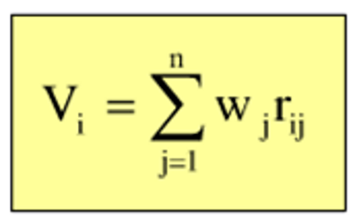
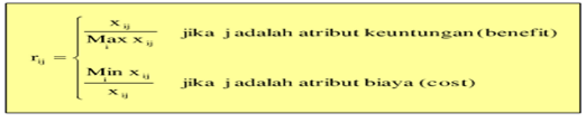

My Design
1. SIRANI (Sistem Rangking Nilai)
sirani or value ranking system is a Website-Based Decision Support System Using the Simple Additive Weighting (SAW) method
- The SAW method is often also known as the weighted sum method.
- The basic concept of SAW is to find a weighted sum of performance ratings for each alternative on all attributes (Fishburn, 1967) (MacCrimmon, 1968).
- This SAW method involves making decisions that determine the weight for each attribute. The total score for the alternative is obtained by adding up all the added results between the rating (which can be compared across attributes) and the weight of each attribute. The attribute rating must be dimension-free in the sense that it has gone through the previous matrix normalization proces
A. Work steps
- Determine the criteria and the weight value of the criteria (Wi) which will be used as a reference in making decisions, namely Ci
- Determine the suitability rating of each alternative on each criterion.
- Matrix normalization
- Preference (Vi) is the final result obtained from the ranking process which is the sum of the multiplication of the normalized matrix R with the weight vector so that the largest value is selected as the best alternative (Ai) as a solution. 
Based on the naming that is adjusted to the type of attribute (profit attribute or cost attribute) so that it is weighted by the R normalized matrix

Where:
rij = normalized performance rating
Maxij = maximum value of each row and column
Mini = minimum value of each row and column
Xij = rows and columns of the matrix
Where:
Vij = Final value of the alternative
Wj = Predetermined weight
Rij = Normalized matrix
A larger value of vi indicates that alternative Ai is more selected